The slope of a line is a measurement of how slanted a line is.
Positive slope means the line is increasing in height as you read the graph from left to right.
Negative slope means the line is decreasing in height as you read the graph from left to right.
How is slope measured?
To measure a line's slope, place two points on the line. Then measure the height and length between the two points.
Slope is a measurement of the height divided by the length. Don't forget slope is positive or negative and we will need to indicate if our line is going upwards or downwards.
Example 1:
The image below shows a slope going downwards, therefore negative. Between the endpoints, there is a box drawn and measurements made of how many boxes long each piece is; height and length. The slope id a ratio of tall over long.
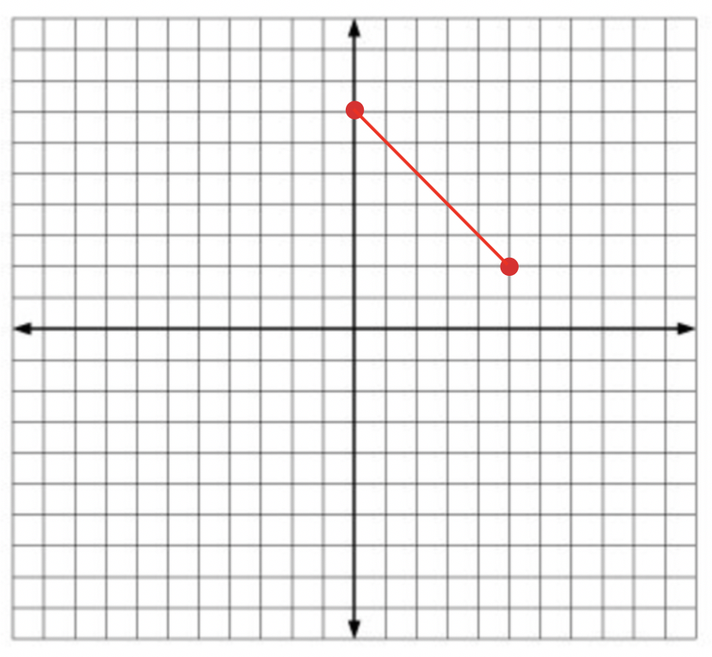
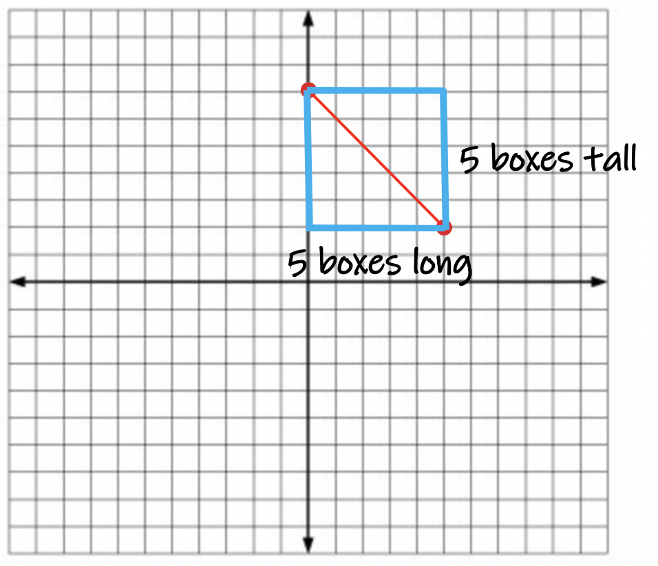
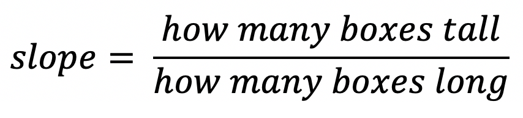
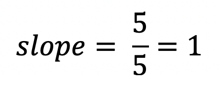
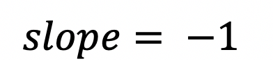
Example 2: The image below shows a slope going downwards, therefore negative.
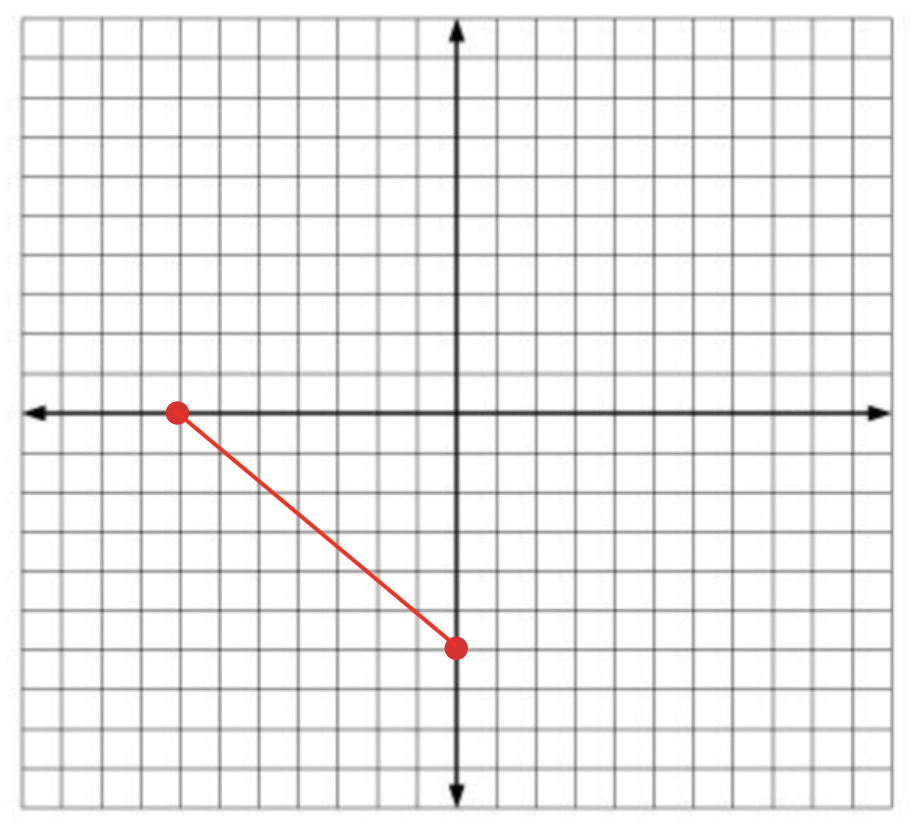
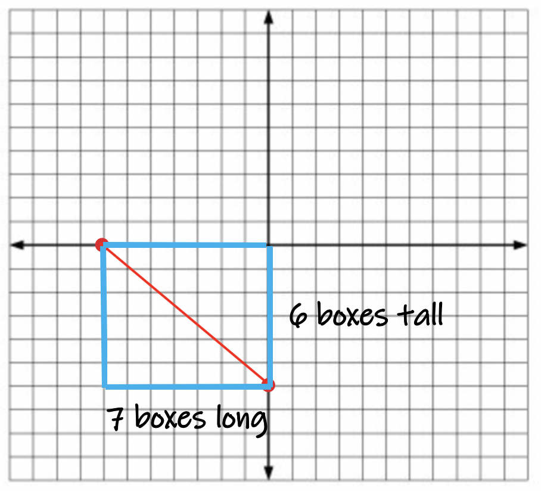
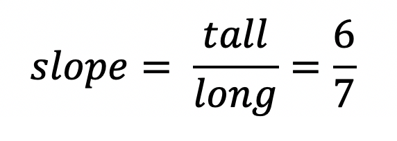
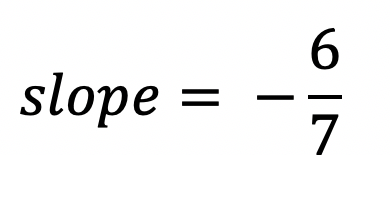
Example 3: The image below shows a slope going upwards, therefore positive.
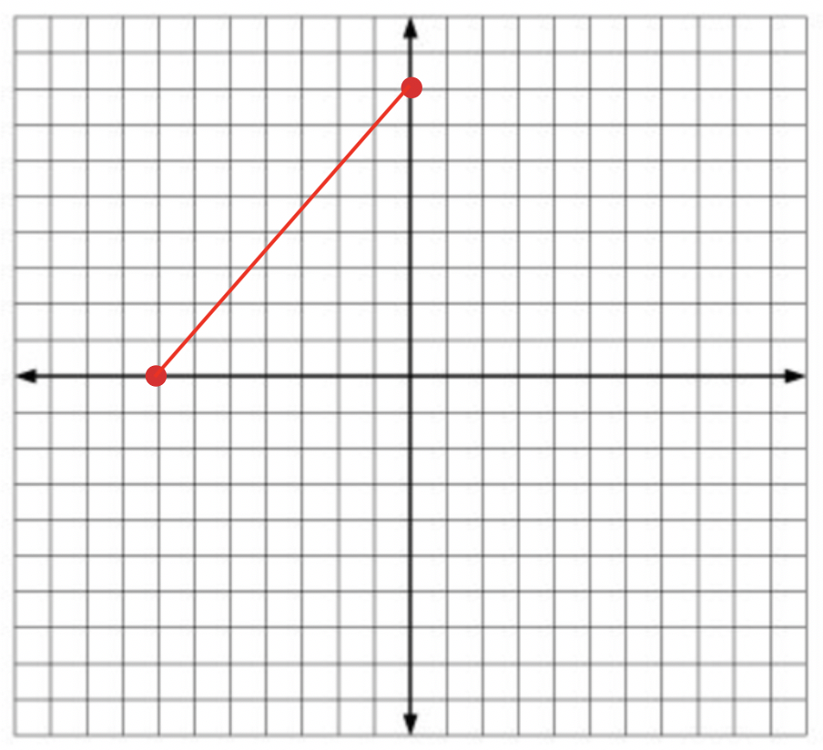
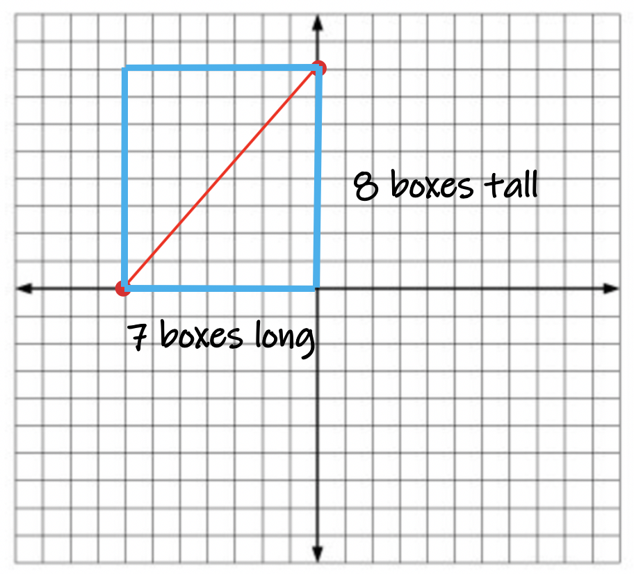
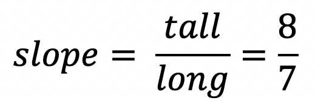
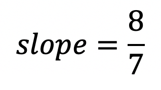
Example 4: The image below shows a slope going upwards, therefore positive.
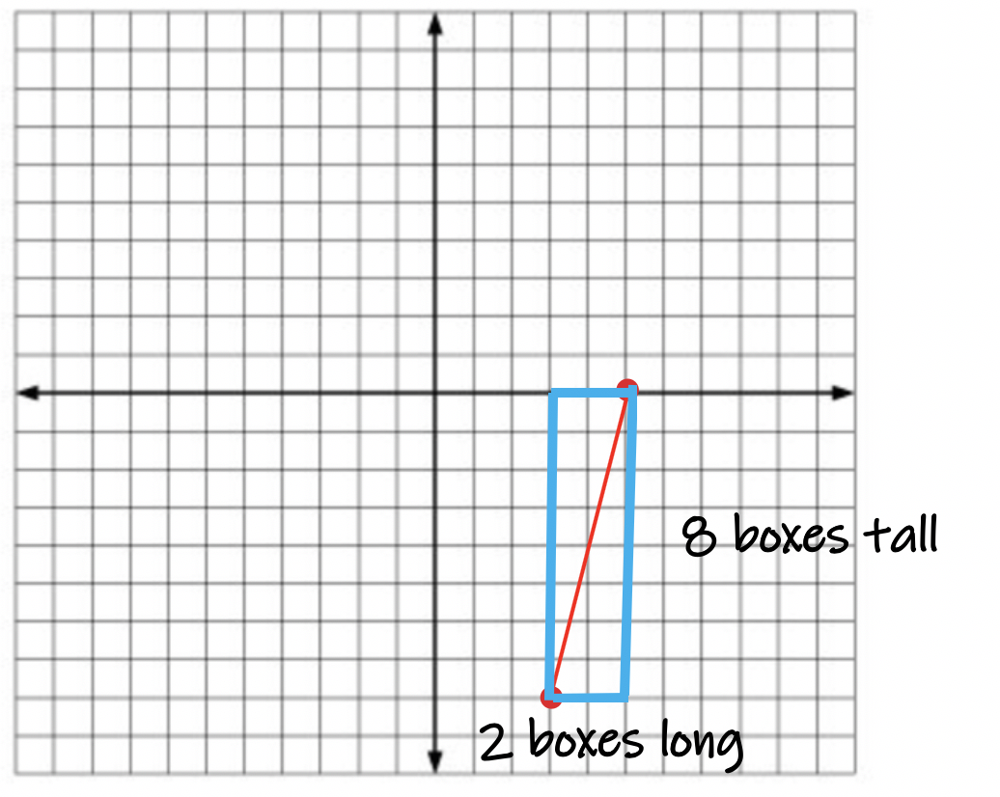
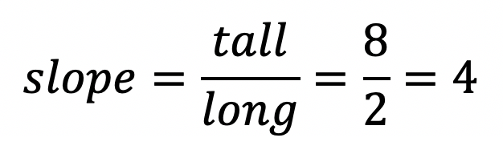
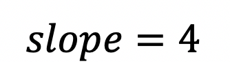
Slope is calculated in the same way each time. Remember to add a negative sign if the slope is negative. If the slope is positive we do not put a + sign infont of the answer. It is implied the number is positive when no plus sign is infront of a number.
Example #1:
Calculate the slope of the line. Then click reveal answer to check your solution.
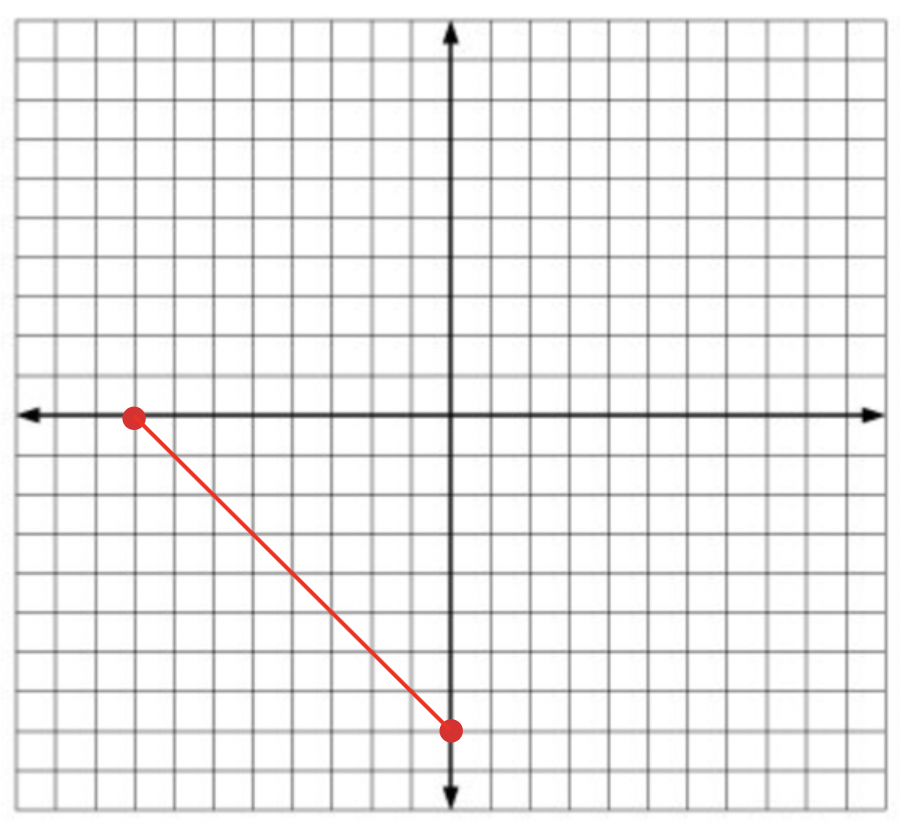
Example #2:
Calculate the slope of the line. Then click reveal answer to check your solution.
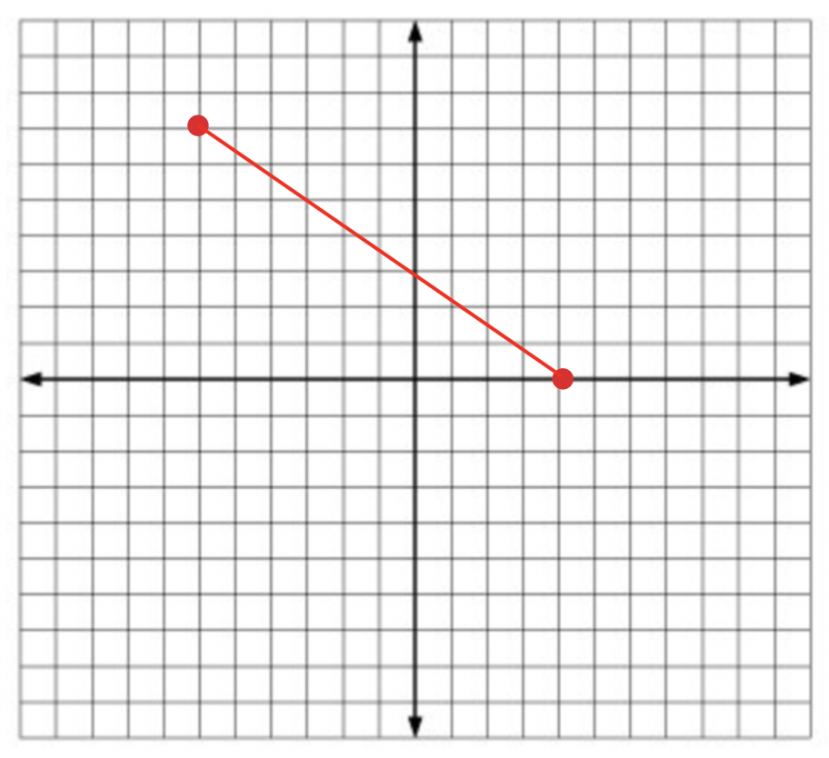
Example #3:
Calculate the slope of the line. Then click reveal answer to check your solution.
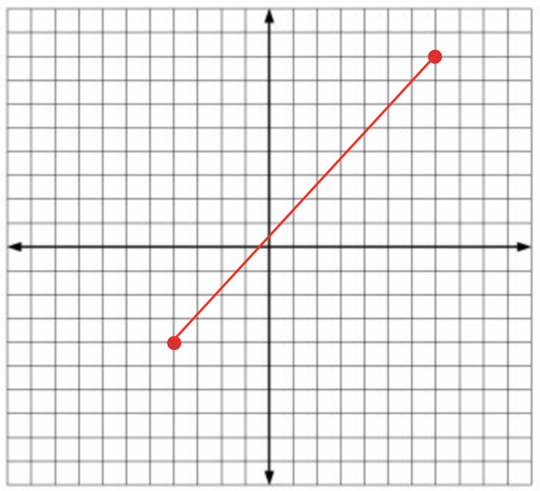
Example #4:
Calculate the slope of the line. Then click reveal answer to check your solution.
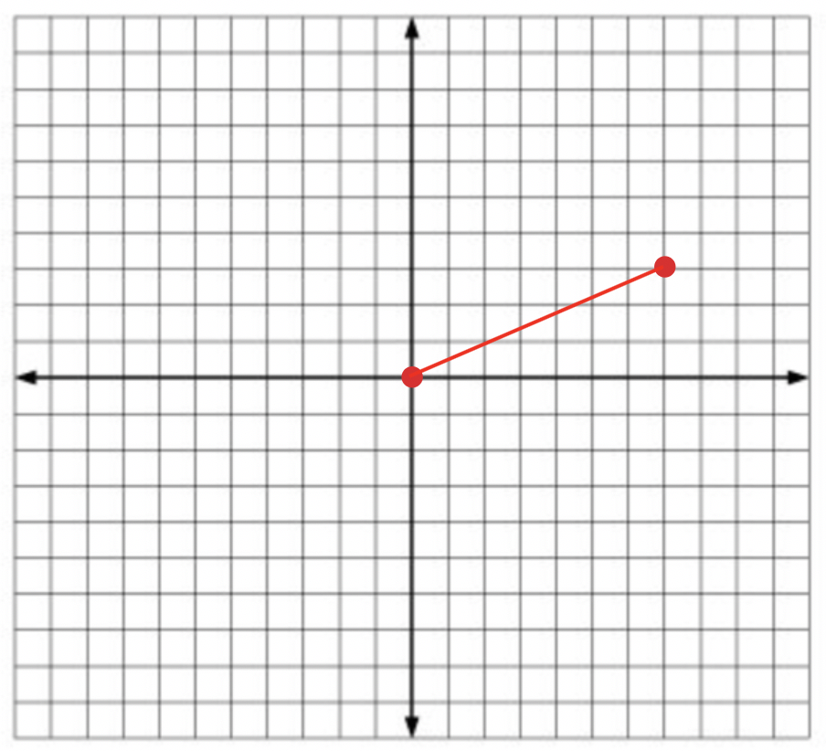
Example #5:
Calculate the slope of the line. Then click reveal answer to check your solution.
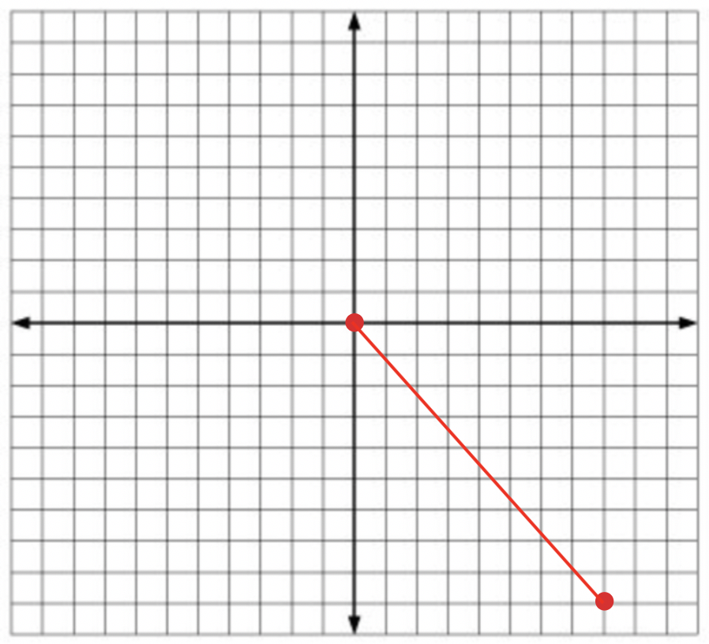